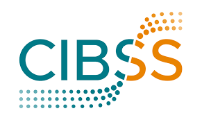
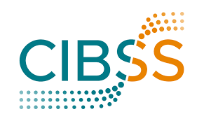

Our group is interested in the molecular mechanisms underlying the control and modulation of developmental timing in vertebrate embryos. We also study the molecular and cellular bases of developmental heterochronies and how they contribute to the evolution of vertebrate body plans. Our approach is integrative, organismal and comparative in nature. A central theme in our work is the importance of developmental modularity in driving evolutionary innovations.
1. Genetics of developmental timing and size control in vertebrates
Using a comparative developmental genetics approach we will exploit the wide natural variation of developmental timing and organismal size that exists across the Oryzias fish genus. By leveraging the power of in-vivo quantitative phenotyping, inter-species genetic hybridization and comparative multi-omics we will uncover the molecular and genetic basis of developmental timing and size control in vertebrates and elucidate how evolutionary tinkering with developmental programs leads to variation in both traits.

2. Molecular basis of developmental heterochronies in vertebrates
We established a.japonica eel embryos as a unique model to study the molecular basis of developmental heterochronies/allochronies underlying extreme body plan evolution in vertebrates. We will generate a detailed cellular cartography of embryonic development in a.japonica using combinatorial single cell RNA sequencing with the goal of understanding the molecular, cellular and morphometric basis of body plan evolution in vertebrates.
3. CRISPR/Cas9 KI tools & In-vivo imaging of endogenous protein dynamics
The lab will continue developing novel CRISPR/Cas9 mediated knock-in techniques in teleosts. Using our tools we will generate KI lines for all the major vertebrate signalling pathways (WNT, FGF, NOTCH, HIPPO, ERK) then quantitatively image endogenous protein dynamics in-toto during early embryonic development in medaka fish. With the goal of linking expression histories/heterogeneities with cell fate specification both under normal conditions and in targeted perturbations.


 
